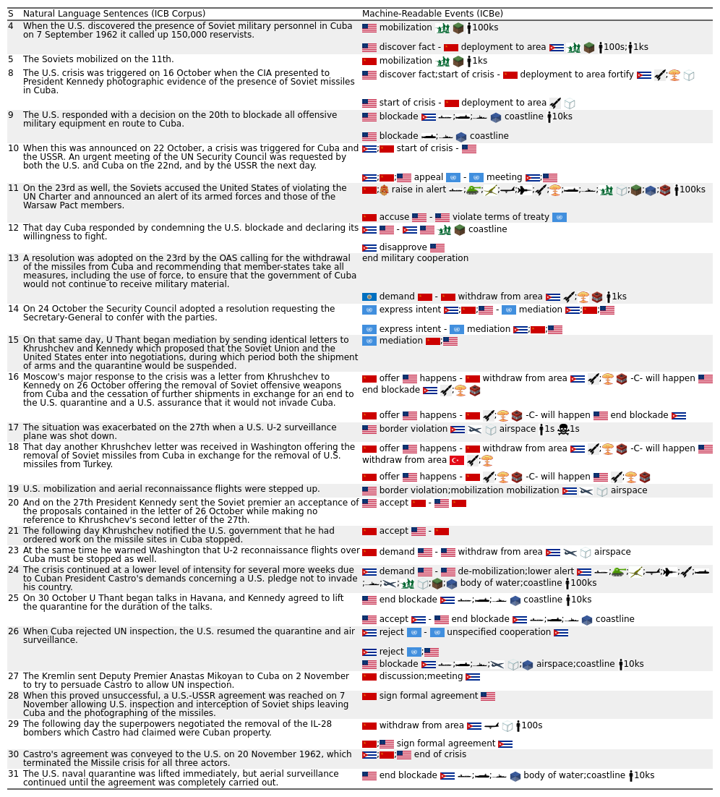
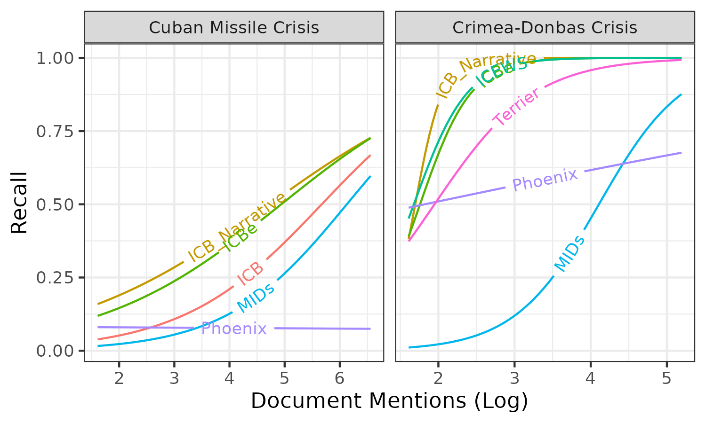
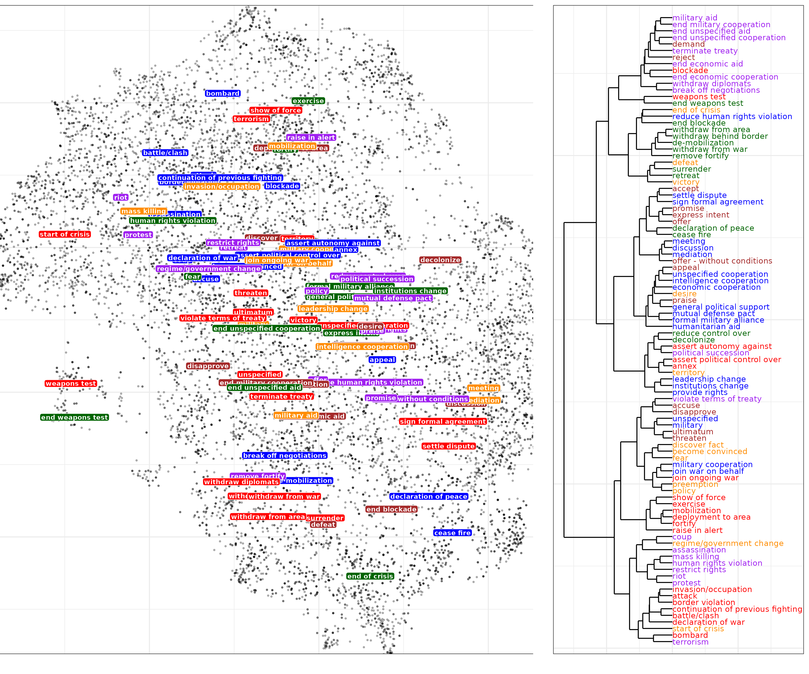
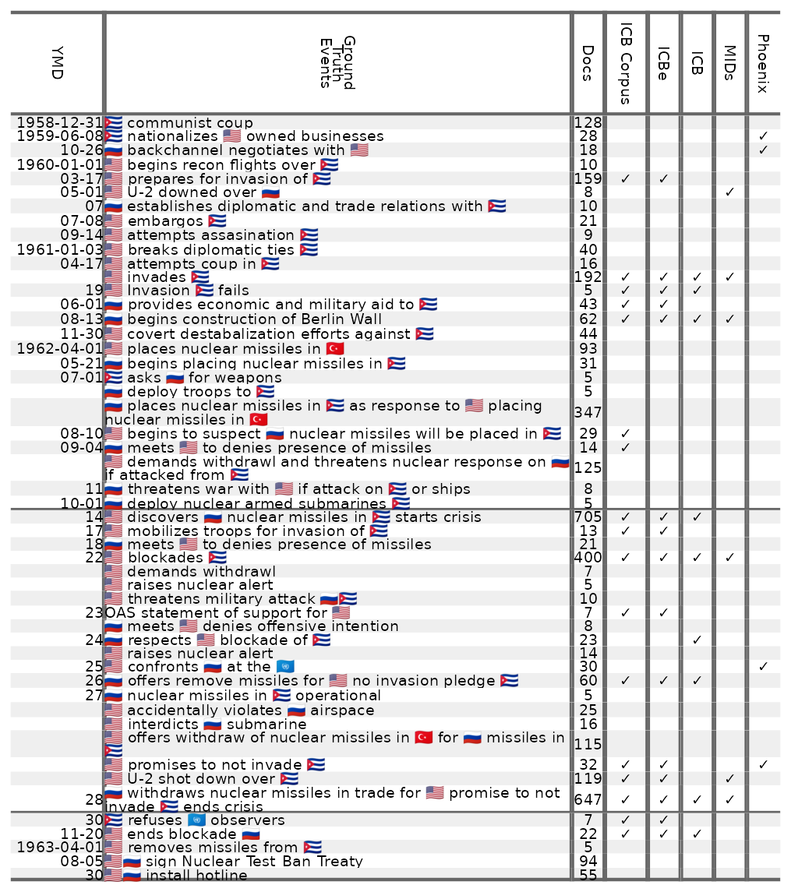
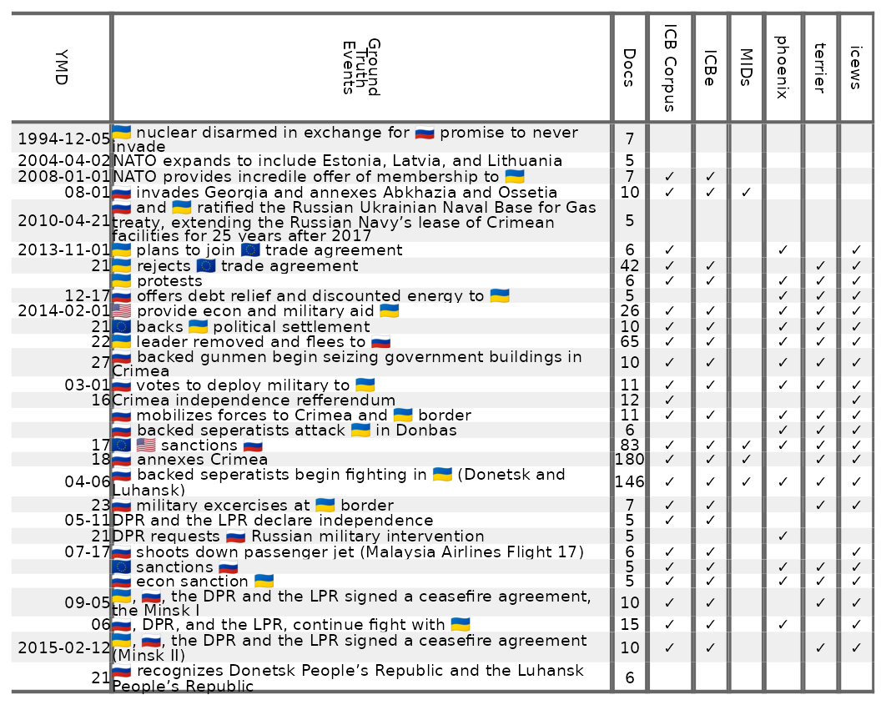
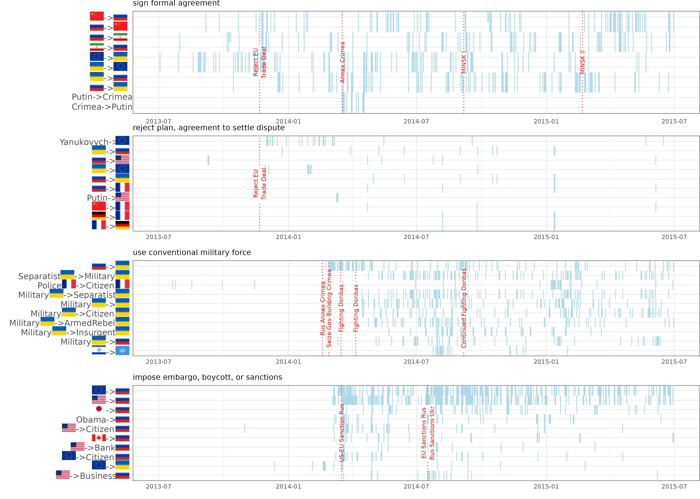

Concept | Literature | ICBe | Phoenix | Terrier | ICEWs | MID Incidents | UCDP-GED | ICB | MIDs | COW | |
|---|---|---|---|---|---|---|---|---|---|---|---|
Domain | Type (Episode or Event) | Ep | Ep | Ep | Ep | Ep | Ev | Ev | Ev | Ev | |
Start | 1918 | 1945 | 1977 | 1995 | 1993 | 1989 | 1918 | 1816 | 1816 | ||
End | 2017 | 2019 | 2018 | 2020 | 2010 | 2015 | 2017 | 2014 | 2007 | ||
N | 32K | 8.5M | 28.4M | 17.5M | 9.6K | 128K | 1K | 5.9K | 1K | ||
Coders (Hand or Automated) | H | A | A | A | H | H | H | H | H | ||
Corpus | ICB | News | News | News | Mix | News | Mix | Mix | Mix | ||
Date source (Event or Article) | E | A | A | A | E | A | E | E | E | ||
Location source (Event or Actor) | E | E | E | E | A | E | A | E | A | ||
Players | States | (fazalStateDeathPolitics2011?), (spruytSovereignStateIts1996?) | ✓ | ✓ | ✓ | ✓ | ✓ | ✓ | ✓ | ✓ | ✓ |
Subnational Actors | (haffarEmergentPeacemakersCataloguing2002?) | ✓ | ✓ | ✓ | ✓ | ✓ | ✓ | ||||
IGO/NGO | (bushDensityDeclineFounding2019?) | ✓ | ✓ | ✓ | ✓ | ✓ | |||||
Civilians | Ben-Yehuda and Mishali–Ram (2006) | ✓ | ✓ | ✓ | ✓ | ✓ | |||||
Pieces | Fatalities | (lacinaExplainingSeverityCivil2006?), (mcnabbcochranMeasuringMilitaryEffectiveness2017?) | ✓ | ✓ | ✓ | ✓ | ✓ | ✓ | |||
Force Size | (carafanoMeasuringMilitaryPower2014?), (goertzMeasuringMilitaryAllocations1986?) | ✓ | |||||||||
Force Domain | (gartzkeCrossDomainDeterrenceStrategy2019?), (lindsayPoliticsManyOther2020?) | ✓ | ✓ | ✓ | ✓ | ||||||
Geography (location, territorial change) | (carterStrategyTerritorialConflict2010?) | ✓ | |||||||||
Think | Alert (Start/End Crisis) | Brecher and Wilkenfeld (1997) | ✓ | ✓ | |||||||
Wishes (Desire/Fear) | (goldgeierPsychologyInternationalRelations2001?) | ✓ | ✓ | ||||||||
Evaluation (Victory/Defeat) | (steinEvaluatingWarOutcomes1980?) | ✓ | ✓ | ||||||||
Aims (Territory, Policy, Regime, Preemption) | (sullivanWarAimsWar2007?) | ||||||||||
Awareness (Discover, Become Convinced) | (ramsayInformationUncertaintyWar2017?), (yarhi-miloEyeBeholderHow2013?) | ✓ | |||||||||
Say | React to past event (Praise, Disapprove, Accept, Reject, Accuse) | (oneillInternationalNegotiationConceptual2018?) | ✓ | ✓ | ✓ | ✓ | |||||
Request future event (Appeal, Demand) | (zartmanEscalationNegotiationInternational2005?) | ✓ | ✓ | ✓ | ✓ | ✓ | |||||
Predict future event (Promise, Threaten, Express Intent, Offer Without Condition) | (sechserMilitarizedCompellentThreats2011?) | ✓ | ✓ | ✓ | ✓ | ✓ | ✓ | ||||
Predict with condition (Offer, Ultimatum) | (powellBargainingTheoryInternational2002?) | ✓ | |||||||||
Do - Unarmed | Government (Leadership/Institution Change, Coup, Assasination) | (goemansIntroducingArchigosDataset2009?), (powellGlobalInstancesCoups2011?) | ✓ | ✓ | ✓ | ✓ | |||||
By Civilians (Protest/Riot/Strike) | (chenowethIntroducingNonviolentAction2019?) | ✓ | ✓ | ✓ | ✓ | ||||||
Against Civilians (Terrorism, Domestic Rights, Mass Killing, Evacuate) | (eckOneSidedViolenceCivilians2007?), (lafreeIntroducingGlobalTerrorism2007?) | ✓ | ✓ | ✓ | ✓ | ||||||
Diplomacy (Discussion, Meeting, Mediation, Break off negotiations, Withdraw/Expel Diplomats, Propoganda) | (beardsleyMediationDilemma2011?) | ✓ | ✓ | ✓ | ✓ | ||||||
Legal Agreements (Sign Agreement, Settle Dispute, Join War on Behalf of, Ally, Mutual Defense Pact, Open Border, Cede Territory, Allow Inspections, Political Succession, Leave Alliance, Terminate Treaty) | (giblerMeasuringAlliancesCorrelates2004?), (owsiakInternationalBorderAgreements2018?) | ✓ | ✓ | ✓ | ✓ | ||||||
Violate Agreement (Violate Terms of Agreement) | (leedsAllianceReliabilityTimes2003?) | ✓ | |||||||||
Mutual Cooperation or Directed Aid (Economic cooperation or Aid, Military Cooperation, Intelligence Cooperation, Unspecified) | (leedsDomesticPoliticalInstitutions1999?) | ✓ | ✓ | ✓ | ✓ | ||||||
Directed Aid (General Political Support, Economic Aid, Humanitarian Aid, Military Aid, Intelligence Aid, Unspecified Aid) | (yarhi-miloArmAllyPatron2016?) | ✓ | ✓ | ✓ | ✓ | ||||||
Do - Armed | Preparation (Alert, Mobilization, Fortify, Exercise, Weapons Test) | (laiEffectsDifferentTypes2004?) | ✓ | ✓ | ✓ | ✓ | |||||
Maneuver (Deployment, Show of Force, Blockade, No Fly Zone, Border Violation) | (allenUSGlobalMilitary2021?) | ✓ | ✓ | ✓ | ✓ | ||||||
Combat (Battle/Clash, Attack, Invasion/Occupation, Bombard, Cease Fire, Retreat) | (fortnaPeaceTime2018?), (minInterstateWarBattle2021?) | ✓ | ✓ | ✓ | ✓ | ||||||
Strategic (Declare War, Join War, Continue Fighting, Surrender, End War, Withdraw from War, Switch Sides) | (sarkeesResortWar181620072010?), (reiterRevisedLookInterstate2016?) | ✓ | ✓ | ✓ | ✓ | ||||||
Autonomy (Assert Political Control Over, Assert Autonomy Against, Annex, Reduce Control Over, Decolonize) | (frederickIssueCorrelatesWar2017?) | ✓ | ✓ | ✓ | ✓ |
If we could record every international interaction in the realms of diplomacy, conflict, economics, and beyond, how much unique information would this chronicle amount to, and how surprised would we be to see something new? In other words, what is the entropy of international relations? While this record could in principle be unbounded, the central conceit of social science is that there are structural regularities that limit what actors can do, their best options, and even which actors are likely to survive [@brecherInternationalStudiesTwentieth1999; @reiterShouldWeLeave2015]. If so, then these events can be recorded and systematically measured by social scientists interested in these regularities.1 Thanks to improvements in natural language processing, more open-ended efforts have begun to capture entire unstructured streams of events from international news reports.2 This has invited fruitful efforts to evaluate the coverage, quality, and accuracy of attempts to measure international affairs.
We advance existing efforts to identify and structure regularized events and actor in international politics by combining human coding with natural language processing to develop (1) a large, flexible ontology of international affairs and (2) a fine-grained and structured event dataset of international crises from 1918-2017 developed by applying our ontology to an unusually high-quality corpus of historical narratives of international crises [@brecherInternationalStudiesTwentieth1999; @wilkenfeldInterstateCrisesViolence2000; @brecherInternationalCrisisBehavior2021]. We then develop several methods for objectively gauging how well these event codings reconstruct the information contained in the original crisis narrative. We conclude by benchmarking our event codings against several current state of the art event data collection efforts. The underlying fine-grained variation in international affairs is unrecognizable through the lens of current quantification efforts. We find that existing models produce data on historical episodes that do not contain enough information to reconstruct the underlying event. In focusing this initial effort on international crises as a proof of concept sample, we demonstrate our ontology and method’s potential to improve upon existing empirical identifications of patterns of international interactions.
In the proceeding four sections, this measurement paper makes the following arguments. First, there is a real-world unobserved latent concept known as international relations that can and should be systematically measured. Second, we propose a method for systematic large-scale measurement of the actors and behaviors in international affairs and as a proof of concept apply that method to a well-regarded and salient sample of events known as international crises. Third, in doing so we confirm that those measurements exhibit several desirable kinds of internal and external validity and out-perform existing approaches. Fourth, this validation can be evaluated in detail via new event visualizations, with examples provided for case studies of the 1962 Cuban Missile Crisis and 2014 Crimea-Donbas crisis. A final section concludes.
Identifying and measuring international relations
Motivation
How can scholars abstract and measure discrete events about a historical episode in international relations? We employ a metaphor of chess, a game that despite its complexity can nonetheless be recorded in a standardized and structured manner. Like chess, international interactions involve a finite set of players (e.g. polities, rebel groups, IGOs) expressing their behaviors (e.g. thinking, saying, and doing) by moving pieces (e.g. military platforms, civilian personnel, diplomats) from and onto identifiable locations (geo-coded coordinates). These moves occur over a marked time period (start and end of a historical episode) and gambits occur in recordable sequences (actions and reactions) to produce observable, if still disputable, outcomes (e.g. victory, defeat, stalemate, peace). Our knowledge of this historical episode, including the actors involved as well as their preferences, behaviors, and beliefs are only indirectly observed from historical records that most often take the form of unstructured natural language text.
Much like the recording of chess evolved from natural language descriptive text notation to the modern figurine algebra notion, international relations scholars have recently sought to produce a structured account of historical events by combining the unstructured corpus of historical records with informative priors about international relations. The resulting structured account of information about a historical episode can be combined with that of other events to produce a systematic account of political events from which we can garner novel insight, assuming the underlying data have high coverage, precision, and recall. The easiest way to convey the desired produced of this task is with an example. Figure 1 shows a narrative account of the Cuban Missile Crisis (1962) in natural language sentences alongside a mapping to discrete machine-readable abstractive events. From the structured data, scholars can identify similarities and differences across events concerning important concepts like when particular foreign policy actions deter versus inflame [@jervisCooperationSecurityDilemma1978; @glaserCausesConsequencesArms2000], when third parties mediate in interstate disputes [@haffarEmergentPeacemakersCataloguing2002; @quinnPowerPlayMediation2006], and how actors try to communicate resolve [@tragerDiplomacyWarPeace2016; @luptonReexaminingReputationResolve2018]. Identifying patterns of international interactions is not just an inherently interesting enterprise; it is a necessary precondition to important efforts to predict where policymakers should turn their attention to improve global welfare [@wardLearningSteppingFuture2013; @begerReassessingRoleTheory2021].

Existing state of the art measurements
We draw informative prior beliefs about the underlying process of international relations that we expect to govern behavior during historical episodes and their conversion to the historical record. We organize our prior beliefs along two overarching axes: existing efforts to identify the actors/actions of international relations and identifying a corpus that can be used to produce an ontology of the information we hope to recover. Table 1 describes these two axes as columns and rows, respectively.
As we are not the first to attempt to measure international relations in a structured manner, the columns of Table 1 compare the ontological coverage of ICBe to existing state of the art systems in production and with global coverage. We choose these datasets and models as they represent frequently used and reputable efforts to structure and describe historical events of interest to scholars of international politics. The first column starts with our contribution, ICBe, alongside other event-level datasets including CAMEO dictionary lookup-based systems (Historical Phoenix [@althausClineCenterHistorical2019]; ICEWS [@boscheeICEWSCodedEvent2015]; Terrier [@grantOUEventData2017]), the Militarized Interstate Disputes Incidents dataset, and the UCDP-GED dataset [@daviesOrganizedViolence19892022; @sundbergIntroducingUCDPGeoreferenced2013].3 The final set of columns compares episode-level datasets beginning with the original ICB project [@brecherInternationalCrisisBehavior2021; @brecherCrisesWorldPolitics1982; @beardsleyInternationalCrisisBehavior2020]; the Militarized Interstate Disputes dataset [@palmerMID5Dataset20112021; @giblerInternationalConflicts181620102018], and the Correlates of War [@sarkeesResortWar181620072010]. There is imperfect overlap concerning their intended depth and scope of coverage; ‘international crises’ are similar, but not identical to, ‘interstate wars’ and ‘militarized interstate disputes’ which differ yet again from ‘individual events of organized violence’ and ‘non-violent action’. Even like-concepts require care in comparison, as an ‘aim’ in ICBe is the same as in MIPS, but an ‘alert’ in ICBe is not the same as an ‘alert’ in MID. Definitions for each ICBe variable are provided in the codebook.
The rows in Table 1 represent the types of information we expect to find in international relations and forms the basis for our proposed ontology. We create this by performing preliminary natural language processing of the corpus and identified named entities and behaviors mentioned in the text. Verbs were matched to the most likely definition found in Wordnet [@millerWordNetLexicalDatabase1995], tallied, and then aggregated into a smaller number of hypernyms balancing conceptual detail and manageable sparsity for human coding (SI Appendix 1.2). This comparison is not intended to fault existing data and models for not including every variable in ICBe’s ontology, as some of these variables fall outside the scope of a particular dataset’s intended purpose. Rather, it serves as an initial basis for identifying the heterogeneity in existing efforts to abstract and measure discrete historical events of interest and to provide theoretical justifications from existing research about what is included in our dataset’s ontology and where ICBe’s detail about historical events can be compared to the current state of the art.
With the exception of large-scale CAMEO dictionary-based systems (the first grouping of columns), our ontology improves upon the the existing state of the art quantitative datasets that ignore important information content about international interactions.4 We highlight two particular innovations. First, we separate the ‘chess pieces’ from the ‘chess players’ in distinguishing between different actors within a state. By virtue of our ontology coding military versus civilian actors and national leaders versus bureaucrats, our data can be used to explore important questions concerning civilian-military relations [@narangCivilmilitaryPathologiesDefeat2017], Track Two diplomacy and the role of sub-national actors [@hsuStatesHarnessingSubnational2020], and the evolution of what actors are engaged in crises - a topic of increasing interest as states engage in gray zone conflict by employing the coast guard or paramilitary mercenaries instead of internationally recognized state militaries [@gannon_shadowdeterrencewhy_2023]. Second, we add information about the domains in which actors behave - whether in land, air, sea, space, or cyber - since they differ in their technology, tactics, geography, and purpose [@gartzkeCrossDomainDeterrenceStrategy2019]. Doing so allows researchers to identify and explain patterns in escalation conditional on the military means states use in conflict. Recent concerns about cross-domain conflict and the effect of new domains of conflict like space and cyber have made this an endeavor of increased interest to practitioners [@gannonOneIfLand2022].
Methodology and data
Corpus
For our corpus, we select a set of unusually high-quality historical narratives from the International Crisis Behavior (ICB) project (\(n=471\)) with coverage spanning 1918-2017 (Supplementary Information (SI) Appendix 1.1)[@brecherInternationalCrisisBehavior2021; @brecher_study_1997]. ICB defines a crisis as meeting three conditions: (1) an actor perceives a threat to one of more of its basic values, (2) the actor has a finite time horizon for responding to the perceived threat, and (3) the probability of military hostility has increased [@brecherCrisesWorldPolitics1982]. Crises are a significant focus of detailed single case studies and case comparisons because they provide an opportunity to examine behaviors in international relations short of, or at least prior to, full conflict [@holsti1914Case1965; @paigeKoreanDecisionJune1968; @allisonEssenceDecisionExplaining1971; @gavinHistorySecurityStudies2014; @brecherCrisesWorldPolitics1982; @iakhnisCrisesWorldPolitics2019]. The corpus is also unique in being designed to be used in a downstream quantitative coding project, meaning each narrative was written by consensus by a small number of scholars using a uniform coding scheme where things like word choice, writing style, and level of specificity were deliberately done in a consistent manner [@hewittEngagingInternationalData2001]. Case selection was exhaustive based on a survey of world news archives and region experts, cross-checked against other databases of war and conflict, and non-English sources [@kangUSBiasStudy2019; @brecherInternationalCrisisBehavior2021 p. 59].
Coding Process
The ICBe ontology follows a hierarchical design philosophy where a smaller number of significant decisions are made early on and then progressively refined into more specific details [@brustIntegratingDomainKnowledge2020].5 Each coder was instructed to first thoroughly read the full crisis narrative and then presented with a custom graphical user interface (GUI) (SI Appendix 2.1). Coders then proceeded sentence by sentence, choosing the number of events (0-3) that occurred, the highest behavior (thought, speech, or activity), a set of players, whether the means were primarily armed or unarmed, whether there was an increase or decrease in aggression (uncooperative/escalating or cooperative/de-escalating), and finally one or more specific and non-mutually exclusive activities. Some additional details were always collected (e.g. location and timing) while other details were only collected if appropriate (e.g. force size, fatalities, domains, units). We find 472 actors and 117 different behaviors.6 A unique feature of the ontology is that thought, speech, and do behaviors can be nested into combinations, e.g. an offer for the U.S.S.R. to remove missiles from Cuba in exchange for the U.S. removing missiles from Turkey. Through compounding, the ontology can capture what players were said to have known, learned, or said about other specific fully described actions.
Each crisis was typically assigned to 2 expert coders and 2 novice coders with an additional tie-breaking expert coder assigned to sentences with high disagreement.7 For the purposes of measuring intercoder agreement and consensus, we temporarily disaggregate the unit of analysis to the Coder-Crisis-Sentence-Tag (n=993,740), where a tag is any unique piece of information a coder can associate with a sentence such as an actor, date, behavior, etc. We then aggregate those tags into final events (n=18,783), using a consensus procedure (SI Appendix 2.2) that requires a tag to have been chosen by at least one expert coder and either a majority of expert or novice coders. This screens noisy tags that no expert considered possible but leverages novice knowledge to tie-break between equally plausible tags chosen by experts.
Performance comparison
Internal consistency
We evaluate the internal validity of the coding process in several ways. For every tag applied we calculate the observed intercoder agreement as the percent of other coders who also applied that same tag (SI Appendix 2.3). Across all concepts, the Top 1 Tag Agreement was low among novices (31%), moderate for experts (65%), and high (73%) following the consensus screening procedure.
We attribute the remaining disagreement primarily to three sources. First, we required coders to rate and justify their confidence in the coding. They reported low confidence for 20% of sentences; 45% of those were due to a mismatch between the ontology and the text (“survey doesn’t fit event”) and 46% were from a lack of information or confused writing in the source text (40% “more knowledge needed”, 6% “confusing sentence”). Observed disagreement varied predictably with self-reported confidence (SI Appendix 2.4). Second, as intended, agreement is higher (75-80%) for questions with fewer options near the root of the ontology compared to agreement for questions near the leaves of the ontology (50%-60%). Third, individual coders exhibit nontrivial coding styles, e.g. some more expressive coders applied many tags per concept while others focused on only the single best match. We further observed unintended synonymity, e.g. the same information can be framed as either a threat to do something or a promise not to do something.
Improvement over existing efforts
To evaluate our coding process relative to existing datasets, we measure the recall and precision of ICBe events in absolute terms and relative to other existing systems. Recall measures the share of desired information recovered by a sequence of coded events while precision measures the degree to which a sequence of events correctly and usefully describes the information in history. To aid in subjective evaluation of the precision and recall of ICBe for each event, we provide full ICB narratives, ICBe coding in an easy-to-read iconographic form, and a wide range of visualizations for every case on the companion website.
Recall for historical episodes is poorly defined for two reasons. History may or may not be written by the victors but by virtue of being written by someone there is no genuine ground truth about what occurred, only surviving texts about it [@turberville_historyobjectivesubjective_1933]. Second, there is no a priori guide to what information is necessary detail and what is ignorable trivia. History suffers from what is known as the Coastline Paradox [@mandelbrotFractalGeometryNature1983] — it has a fractal dimension greater than one such that the more you zoom in, the more detail you will find about individual events as well as in between any two discrete events. The ICBe ontology is a proposal about what information is important, but we need an independent benchmark to evaluate whether that proposal is a good one and that allows for comparing proposals from event projects that had different goals. We need a yardstick for history.
Our strategy for dealing with both problems is a plausibly objective yardstick called a synthetic historical narrative. We collect a large diverse corpus of narratives spanning timelines, encyclopedia entries, journal articles, news reports, websites, and government documents. Using natural language processing (fully described in SI Appendix 3.1), we identify details that appear across multiple accounts. The more accounts that mention a detail, the more central it is to understanding the true historical episode. The theoretical motivation is that authors face word limits which force them to pick and choose which details to include, and they choose details that serve the specific context of the document they are producing. With a sufficiently large and diverse corpus of documents, we can vary the context while holding the overall episode constant and see which details tend to be invariant to context. Intuitively, a high-quality event dataset should have high recall for context invariant details both because of their broader relevance and also because they are easier to find in source material.
We find substantive variation in recall across existing state of the art methods. Mentions of a detail across accounts are exponentially distributed with context-invariant details appearing dozens to hundreds of times more than context-dependent details.8 Furthermore, crisis start and stop dates are arbitrary, and the historical record points to many precursor events as necessary detail for understanding later events. Figure 2 compares ICBe’s recall with that of existing datasets for the two case studies detailed in Section 4. ICBe strictly dominates all of the systems but ICEWs in recall though we note that the small sample sizes mean these systems should be considered statistically indistinguishable. Across all existing datasets and ICBe, recall increases with the number of document mentions which is an important sign of validity for both them and our benchmark. The one outlier is Phoenix which in the Cuban Missile Crisis case is so noisy that it’s recall curve is flat to decreasing as mentions increase. The two episode-level datasets (MIDs and ICM) have low coverage of contextual details. The two other dictionary systems ICEWs and Terrier have higher coverage, with ICEWs outperforming Terrier. Importantly our corpus of ICB narratives has high recall of frequently mentioned details giving us confidence in how those summaries were constructed, and ICBe lags only slightly behind showing that it left little additional information on the table.

The second component of event measurement validation is precision. It does little good to recall a historical event but too vaguely (e.g. MIDs describes the Cuban Missile Crisis as a blockade, a show of force, and a stalemate) or with too much error to be useful for downstream applications (e.g. ICEWS records 263 “Detonate Nuclear Weapons” events between 1995-2019). ICBe’s ontology and coding system are designed to strike a balance so that the most important information is recovered accurately but also abstracted to a level that is still useful and interpretable.
How does ICBe’s precision compare to the existing state of the art? A researcher should be able to lay out the events of a crisis on a timeline and read off the macrostructure of an episode from each individual move. We call this visualization a crisis map, a directed graph intersected with a timeline. A crisis map using ICBe for the Cuban Missile Crisis case study is provided in Figure 5, and crisis maps for the two case studies using existing event datasets can be found in SI Appendix 4.3 and 4.4 and crisis maps for all crises using all datasets can be found on the companion website. The crisis maps reveal the episode-level datasets like MIDs or the original ICB are too sparse and vague to reconstruct the structure of the crisis (SI Appendix 4.3 and 4.4). On the other end of the spectrum, the high recall dictionary-based event datasets like Terrier and ICEWs produce so many noisy events (several hundred thousand) that even with heavy filtering their crisis maps are completely unintelligible. Further, because of copyright issues, none of these datasets directly provide the original text spans making event-level precision difficult to verify.
We further want to verify individual event codings, which we can do in the case of ICBe because each event is mapped to a specific span of text. We develop the iconography system for presenting event codings as coherent statements that can be compared side by side to the original source narrative for every case on the companion website. We further provide a stratified sample of event codings alongside their source text (SI Appendix 4.2). We find both the visualizations of macrostructure and head-to-head comparisons of ICBe codings to the raw text to strongly support the quality of ICBe.
Figure 3 shows the location of every sentence from the ICBe corpus in semantic space as embedded using the same large language model as before, and the median location of each ICBe event tag applied to those sentences.9 Labels reflect the individual leaves of the ontology and colors reflect the higher level coarse branch nodes of the ontology. If ICBe has high precision, substantively similar tags ought to have been applied to substantively similar source text, which is what we see both in two dimensions in the main plot and via hierarchical clustering on all dimensions in the dendrogram along the right-hand side.10

Case illustrations
In this section, we focus our validation on two case studies for which we have produced synthetic narratives using the method described in Section 3.2. Our proposed measure is a reconstruction task to see whether our intended ontology can be recovered through only unsupervised clustering of sentences they were applied to. The first (Figure 1) is the Cuban Missile Crisis (hereafter Cuban Missiles) which took place primarily in the second half of 1962, involved the United States, the Soviet Union, and Cuba, and is widely known for bringing the world to the brink of nuclear war. The second (SI Appendix 4.1) is the Crimea-Donbas Crisis (hereafter Crimea-Donbas) which took place primarily in 2014, involved Russia, Ukraine, and NATO, and within a decade spiraled into a full-scale invasion. We choose these cases because they are significant in contemporary international relations, are widely known across academic disciplines as well as among the public, and are sufficiently brief to evaluate in depth. They are similar in that both cases involve a superpower in crisis with a neighbor that changed from a friendly to a hostile regime, both held implications for the economic and military security for the superpower by risking full-scale invasion, and both eventually invited intervention by an opposing superpower.
Cuban Missile Crisis (1962)
A synthetic historical narrative for Cuban Missiles appears in Figure 4, with 51 events drawn from 2,020 documents. Each row represents a detail that appeared in at least five documents along with an approximate start date, a handwritten summary, the number of documents it was mentioned in, and whether it could be identified in the text of the original ICB corpus, our ICBe events, and any of the competing existing models.
ICB’s improved recall of Cuban Missiles was relative to the state of the art was summarized in Section 3.2 (Figure 2), but the events that explain that improvement can now be seen. Our ground truth ICB narrative contains 17/51 of the events from the synthetic narrative of a case that includes high-level previously classified details. ICBe captures nearly all details included in ICB as well as more details from the synthetic narrative than any competing dataset. Phoenix includes some earlier information than ICBe like the nationalization of businesses and back channel negotiations, but the crisis narrative has a clean canonical end with the Soviets agreeing to withdraw missiles. ICBe stands out in including more communicative behavior (do – speech) than existing datasets like US threats to attack and later promises not to invade. Given the recognized importance of threat credibility for understanding international conflict, the addition of this information is a substantively important improvement over the existing state of the art [@slantchev_militarythreatscosts_2011].

Figure 5 shows the crisis map for the Cuban Missile Crisis. Looking at the crisis on a timeline, one can now identify the structure of actors and the environment, along with its supporting details, in a way that validates the precision of ICBe. Although harder to measure objectively, this crisis map provides face valid evidence that ICBe’s account is not too vague, but also not unnecessarily detailed. We include much of the geopolitically important details like Soviet deployment, US discovery of that deployment, heightened alert levels, a blockade, and negotiations that ended with a formal agreement. At the same time, the crisis map indicates that ICBe does not include unnecessary nuances that preclude useful comparison to other international events.

Crimea-Donbas (2014)
A synthetic historical narrative for the 2014 Crimea-Donbas crisis (30 events drawn from 971 documents) appears in Figure 6. As in the earlier case, rows represent details that appeared in at least five documents and whether it is identified in ICBe and existing datasets.
Again quantitatively summarized earlier in Section 3.2 (Figure 2), our ground truth ICB narrative contains 23/30 of the events from the synthetic narrative. Like the gray zone precursor to the Cuban Missile crisis [@cormacGreyNewBlack2018], Ukraine provided several security guarantees to Russia that were potentially undone, e.g. a long term lease on naval facilities in Crimea. But unlike the Cuban Missile crisis, the end of this crisis is unclear, with the event meekly ending with a second cease-fire agreement (Minsk II) but continued fighting. ICBe again recalls more important information about the crisis than any existing dataset, particularly information concerning the behavior of non-state separatist groups like the Donetsk People’s Republic (DPR) and Luhansk People’s Republic (LPR).

As this more recent case reflects primarily public reporting rather than the previously classified details relevant for the Cuban Missile Crisis, ICBe’s improvement relative to the global and real-time coverage of dictionary-based event systems is still present, but less pronounced. We want to take seriously the possibility that some functional transformation could recover the precision of ICBe. For example, @terechshenkoHotCollarLatent2020 attempts to correct for the mechanically increasing amount of news coverage each year by de-trending violent event counts from Phoenix using a human-coded baseline. Others have focused on verifying precision for ICEWs on specific subsets of details against known ground truths, e.g. geolocation [@cookLostAggregationImproving2019], protest events (80%) [@wuestExternalValidationProtest2020], anti-government protest networks (46.1%) [@jagerLimitsStudyingNetworks2018].
We take the same approach here in Figure 7, selecting four specific CAMEO event codings and checking how often they reflect a true real-world event from the Crimea-Donbas synthetic narrative. We choose four event types around key moments in the crisis. The start of the crisis revolves around Ukraine backing out of a trade deal with the EU in favor of Russia, but “sign formal agreement” events act more like a topic detector with dozens of events generated by discussions of a possible agreement but not the actual agreement which never materialized. The switch is caught by the “reject plan, agreement to settle dispute”, but also continues for Viktor Yanukovych even after he was removed from power because of articles retroactively discussing the cause of his removal. Events for “use conventional military force” capture a threshold around the start of hostilities and who the participants were but not any particular battles or campaigns. Likewise, “impose embargo, boycott, or sanctions” captures the start of waves of sanctions and from who but are effectively constant as the news coverage does not distinguish between subtle changes or additions. In sum, dictionary-based methods on news corpora tend to have high recall because they parse everything in the news, but for the same reason, their specificity for most event types is too low to back out individual chess-like sequencing that ICBe aims to record.

Conclusion
We investigated event abstraction from narratives describing key historical episodes in international relations. We synthesized a prior belief about the latent unobserved phenomena that drive these events in international relations and proposed a mapping to observable concepts that enter into the observed historical record. We designed an ontology with high coverage over those concepts and developed a training procedure and technical stack for human coding of historical texts. Multiple validity checks find the resulting codings have high internal validity (e.g. intercoder agreement) and external validity (i.e. matching source material in both micro-details at the sentence level and macro-details spanning full historical episodes). Further, these codings perform much better in terms of recall, precision, coverage, and overall coherence in capturing these historical episodes than existing event systems used in international relations.
We release several open-source products along with supporting code and documentation to further advance the study of international relations, event extraction, and natural language processing. The first is the International Crisis Behavior Events (ICBe) dataset, an event-level aggregation of what took place during the crises identified by the ICB project. These data are appropriate for statistical analysis of hard questions about the sequencing of events (e.g. escalation and de-escalation of conflicts).11 Second, we provide a coder-level disaggregation with multiple codings of each sentence by experts and undergrads that allows for the introduction of uncertainty and human interpretation of events. Further, we release a direct mapping from the codings to the source text at the sentence level as a new resource for natural language processing. Finally, we provide a companion website that incorporates detailed visualizations of all of the data introduced here at crisisevents.org.
Funding
This work was supported by a grant from the Office of Naval Research [N00014-19-1-2491] and from the Charles Koch Foundation [20180481]. The financial sponsors played no in the design, execution, analysis and interpretation of data, or writing of the study.
Acknowledgements
We thank the ICB Project and its directors and contributors for their foundational work and their help with this effort. We make special acknowledgement of Michael Brecher for helping found the ICB project in 1975, creating a resource that continues to spark new insights to this day. We thank the many undergraduate coders. Thanks to the Center for Peace and Security Studies and its membership for comments. Special thanks to Rebecca Cordell, Philip Schrodt, Zachary Steinert-Threlkeld, and Zhanna Terechshenko for their generous feedback. Thank you to the cPASS research assistants: Helen Chung, Daman Heer, Syeda ShahBano Ijaz, Anthony Limon, Erin Ling, Ari Michelson, Prithviraj Pahwa, Gianna Pedro, Tobias Stodiek, Yiyi ‘Effie’ Sun, Erin Werner, Lisa Yen, and Ruixuan Zhang.
Data Availability Statement
This article’s data, supplementary appendix, replication material, and visualizations of every historical episode are available on the GitHub repository ICBEventData and through the companion website crisisevents.org.
Competing Interests Declaration
The authors declare that there are no competing interests.
Works Cited
Footnotes
See work on crises [@brecherCrisesWorldPolitics1982; @beardsleyInternationalCrisisBehavior2020], militarized disputes [@palmerMID5Dataset20112021; @giblerInternationalConflicts181620102018], wars [@sarkeesResortWar181620072010; @reiterRevisedLookInterstate2016], organized violence [@ralphsundbergUCDPGEDCodebook2016; @daviesOrganizedViolence19892022], political violence [@raleighIntroducingACLEDArmed2010], sanctions [@felbermayrGlobalSanctionsData2020], and international agreements [@kinneDefenseCooperationAgreement2020; @owsiakInternationalBorderAgreements2018], dispute resolution [@frederickIssueCorrelatesWar2017], and diplomacy [@moyerWhatAreDrivers2020; @sechserMilitarizedCompellentThreats2011].↩︎
See @beielerGeneratingPoliticalEvent2016; @boscheeICEWSCodedEvent2015; @brandtPhoenixRealTimeEvent2018; @grantOUEventData2017; @liComprehensiveSurveySchemabased2021. On event extraction from images and social media see @zhangCASMDeepLearningApproach2019 and @steinert-threlkeldFutureEventData2019.↩︎
Other related datasets that insufficiently overlap ICBe’s domain for comparison include BCOW [@lengMilitarizedInterstateCrises1988], WEIS [@mcclellandWorldEventInteraction1978], CREON [@hermannComparativeResearchEvents1984], CASCON [@bloomfieldCASCONIIIComputeraided1989], SHERFACS [@shermanSHERFACSCrossParadigmHierarchical2000], Real-Time Phoenix [@brandtPhoenixRealTimeEvent2018], and COfEE [@balaliCOfEEComprehensiveOntology2021] (see histories in @merrittMeasuringEventsInternational1994 and @schrodtTwentyYearsKansas2006).↩︎
See @balaliCOfEEComprehensiveOntology2021 for a recent review of ontological depth and availability of Gold Standard example text.↩︎
This process quickly focuses the coder on a smaller number of relevant options while also allowing them to apply multiple tags if the sentence explicitly includes more than one or there is insufficient evidence to choose only one tag. The guided coding process also allows for the possibility that earlier coarse decisions have less error than later fine-grained decisions.↩︎
See the full codebook on Github Repository ICBEventData.↩︎
Expert coders were graduate students or postgraduates who collaboratively developed the ontology and documentation for the codebook. Undergraduate coders were students who engaged in classroom workshops.↩︎
As the ICB narratives are intended to explain conflictual behavior in a political context, many of the missing events concern more economic components of conflict (eg. nationalizing a foreign business). Even when they occur in the context of a crisis, these events largely fall outside the sample of information on which ICBe’s ontology is currently trained. Even with this limitation, ICBe is more comprehensive than the existing datasets that do try to code the economic dimensions of these crises. We see expanding the ontology to broader international phenomenon as a promising future implementation of our model.↩︎
We preprocess sentences to replace named entities with a generic Entity token.↩︎
Hierarchical clustering on cosine similarity and with Ward’s method.↩︎
Using ICBe data @gannonOneIfLand2022 finds that cross-domain crises are shorter and less violent than same-domain crises.↩︎